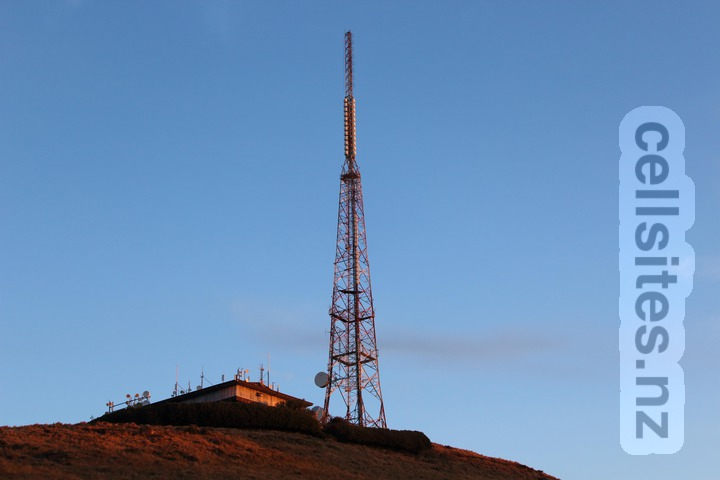
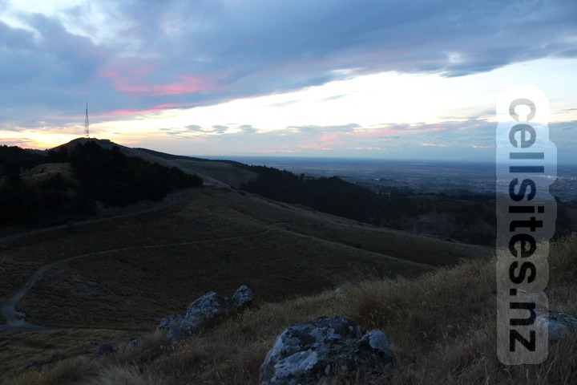
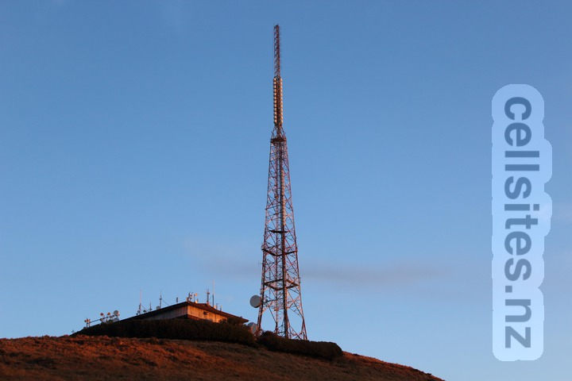
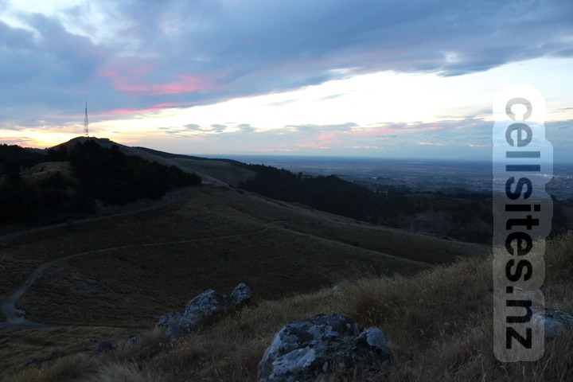
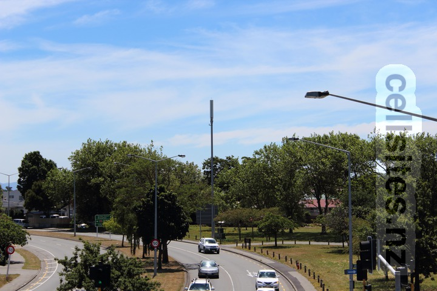

Kordia/Vodafone Sugarloaf
-
Kordia
- Freeview Coverage Map: Sugarloaf
- Wikipedia: Sugarloaf (New Zealand)
- Vodafone


Hit List: Close-up photo of the Vodafone antennas.


Hit List: Close-up photo of the Vodafone antennas.
